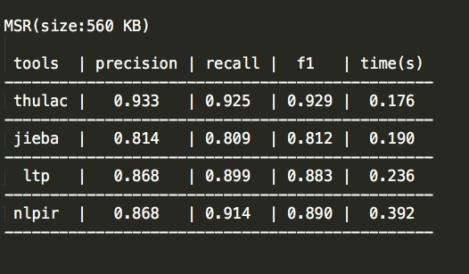
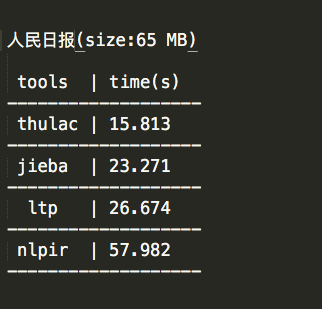

中文分词工具测评
引言
分词对于研究和应用中文自然语言处理的童鞋来说，都是一个非常非常基础的部件，分词的质量直接影响到后续词性标注、命名实体识别、句法分析等部件的准确性。作为一个基础部件，学术界对分词的研究已经非常久了，市面上流行的几大开源分词工具也被工业界的各大公司应用很多年了。最近，中文分词随着一篇博文的发表被推到了风口浪尖，引发众多大牛在微博、微信群里的激烈讨论。本文并不想对这篇博文进行过多评论，只是想用公开的数据集对各大分词工具进行一个客观地测评，以供大家在选择工具时有所依据。
中文分词工具
本文选择了4个常见的分词工具，分别是：哈工大LTP、中科院计算所NLPIR、清华大学THULAC和jieba，为了对比分词速度，选择了这四个工具的c++版本进行评测。
1、LTP https://github.com/HIT-SCIR/ltp
2、NLPIR https://github.com/NLPIR-team/NLPIR
3、THULAC https://github.com/thunlp/THULAC
4、jieba https://github.com/yanyiwu/cppjieba
测试数据集
1、SIGHAN Bakeoff 2005 MSR, 560KB http://sighan.cs.uchicago.edu/bakeoff2005/
2、SIGHAN Bakeoff 2005 PKU, 510KB http://sighan.cs.uchicago.edu/bakeoff2005/
3、人民日报 2014, 65MB https://pan.baidu.com/s/1hq3KKXe
前两个数据集是SIGHAN于2005年组织的中文分词比赛所用的数据集，也是学术界测试分词工具的标准数据集，本文用于测试各大分词工具的准确性，而最后一个数据集规模较大，用于测试分词速度。
测试方法
用SIGHAN Bakeoff 2005比赛中所自带的score脚本、test gold数据和training words数据对4个工具进行准确性测试，具体使用方法可参考：http://sighan.cs.uchicago.edu/bakeoff2005/data/icwb2-data.zip 中的readme文件。
测试硬件
Intel Core i7-6700 CPU@3.40GHz*8
测试结果
1、MSR测试结果

2、PKU测试结果
3、人民日报测试结果

测试结论
1、一个好的分词工具不应该只能在一个数据集上得到不错的指标，而应该在各个数据集都有很不错的表现。从这一点来看，thulac和ltp都表现非常不错。
2、因为分词是个基础部件，分词速度对于一个分词工具来说也至关重要。从这一点来看，thulac和jieba表现的不错。
3、大家都知道，基本的分词依赖模型，但真正想用分词工具来解决应用层面上的问题，都需要借助于词库，本文测试的4个工具均支持用户自定义词库。
4、特别需要强调的一点是，哈工大的ltp支持分词模型的在线训练，即在系统自带模型的基础上可以不断地增加训练数据，来得到更加丰富、更加个性化的分词模型。
总结
争论是一个好的事情，尤其是不同背景的人站在不同的角度对同一个事情进行争论，常常会碰撞出知识的火花，对于这个领域的发展有更好地推动作用。希望类似的争论可以多一些，让刚刚入门的或者准备入门的童鞋可以更加客观地看到一个领域的发展现状，而不是盲目地被一些热门的词蒙蔽双眼，失去判断。对于分词来说，最近几年大热的深度学习模型，并不会比之前传统的crf模型有多大性能上的突破，所以大家应该理性地看待深度学习以及人工智能，捧得越高可能摔得越惨。
参考文献
1、Zhongguo Li, Maosong Sun. Punctuation as Implicit Annotations for Chinese Word Segmentation. Computational Linguistics, vol. 35, no. 4, pp. 505-512, 2009.
2、Meishan Zhang, Yue Zhang, Guohong Fu. Transition-Based Neural Word Segmentation
http://www.aclweb.org/anthology/P/P16/P16-1040.pdf
3、Meishan Zhang, Zhilong Deng，Wanxiang Che, and Ting Liu. Combining Statistical Model and Dictionary for Domain Adaption of Chinese Word Segmentation. Journal of Chinese Information Processing. 2012, 26 (2) : 8-12 (in Chinese)
4、Wanxiang Che, Zhenghua Li, and Ting Liu. LTP: A Chinese Language Technology Platform. In Proceedings of the Coling 2010:Demonstrations. 2010.08, pp13-16, Beijing, China.